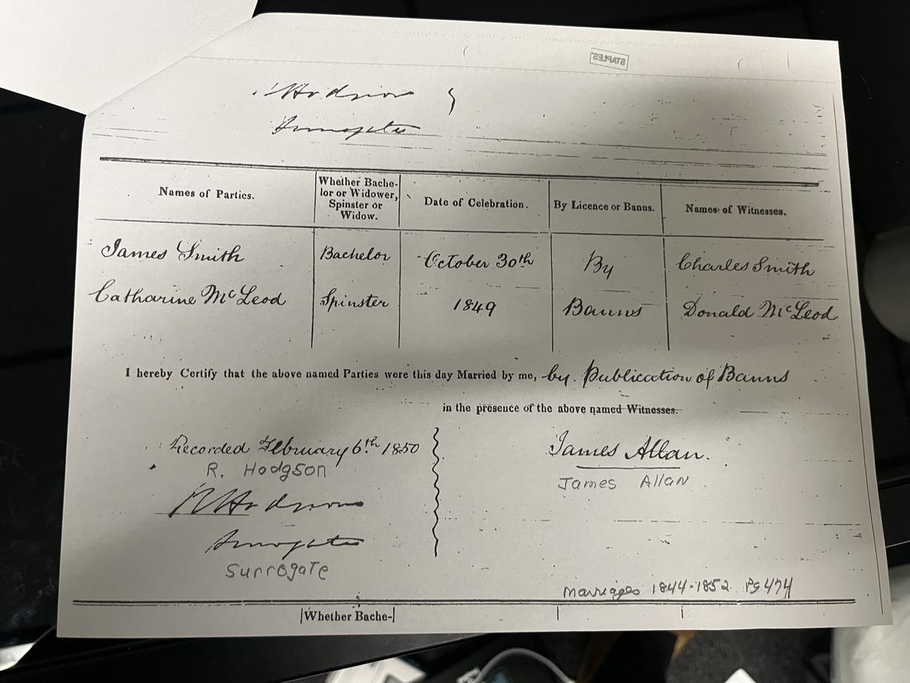
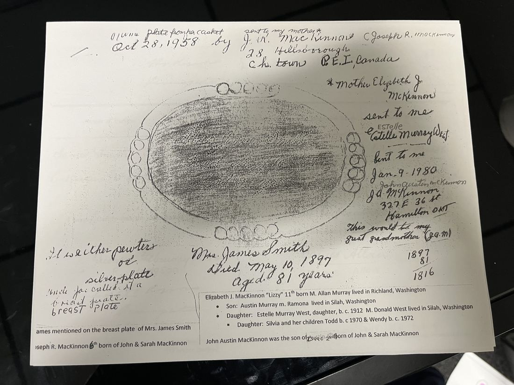
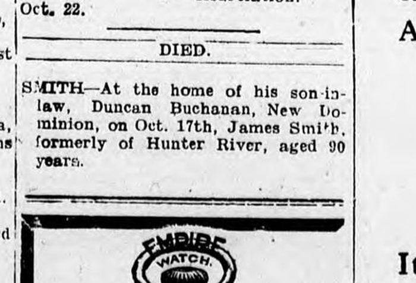
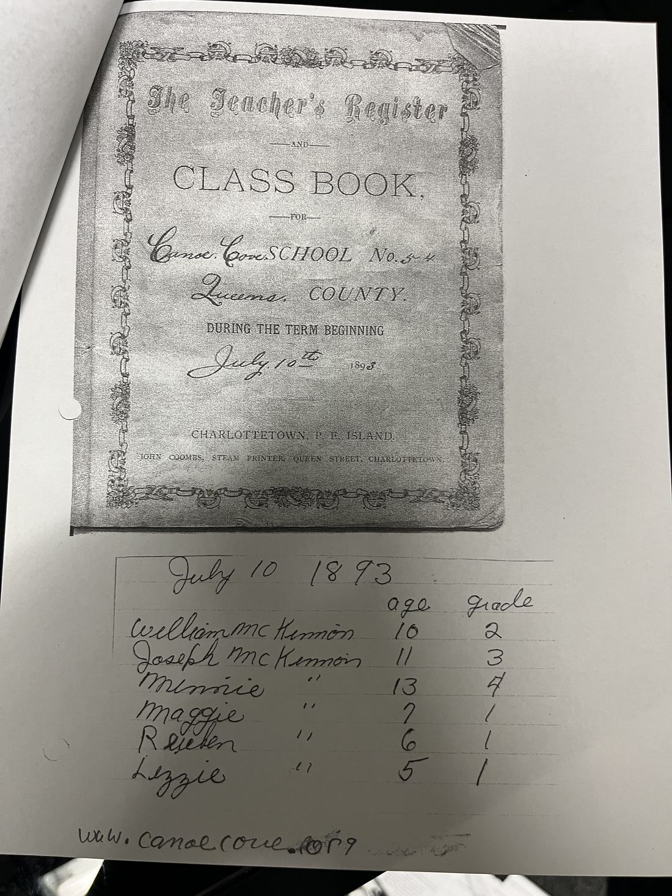
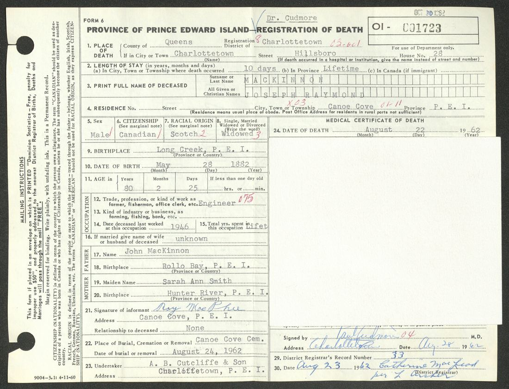
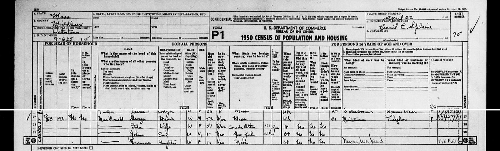

From Suffolk to Watertown
How a farm boy from England, a McLeod woman who may have come from Skye, a Catholic engineer from Rollo Bay and three generations of strong-willed Island women got us from a Prince Edward Island cannery to a house on Laurel Street. It's built on Joyce (Bailey) Nelson's decades of research, with every fact tied to the document it comes from.
Small numbers like 1 link to the sources at the bottom. "Joyce's packet" means the papers Joyce mailed to Garrett. "PEI Archives" means the Public Archives and Records Office online database, searched October 2026.
1831A ship from Yarmouth
On 14 June 1831 two emigrant ships from Great Yarmouth, on the Suffolk–Norfolk coast, sailed into Prince Edward Island on the same day: the Baltic and the Minerva. The Minerva's 122 passengers included "the families of John Birt, John Cook, William Smith, Charles Gibb(s), and Samuel Mayhew."13
A William Smith of New Glasgow, PEI, died in 1857 aged 69. The Island's death index records a single line about him: "Came 1831, Suffolk, England."11 Ten years after landing, a William Smith was farming on Lot 23, the New Glasgow and Hunter River district, with nine people in his household: one man aged 45–60, two young men, two boys, a woman and three girls.12
Family papers say this William married Ann Dobbie (the spelling wanders: Dubble, Double, Doublie) in Suffolk, and that their eldest son was a boy named James.14 An English parish index has a James Smith baptized at Ilketshall St Lawrence, Suffolk, on 24 December 1820, son of William and Ann, with brothers Charles (1825) and John (1827).15 Whether that boy is our James is the one big unsolved question in this story. We'll come back to it.
1849A wedding by banns
On 30 October 1849, James Smith, bachelor, married Catharine McLeod, spinster, "by Publication of Banns." The witnesses were Charles Smith and Donald McLeod, and the minister was James Allan.5 A brother Charles turns up again and again in the Suffolk family. William Charles Smith, born in Suffolk in 1825, lived and died at Hunter River, and his gravestone reads "BORN IN ENGLAND." He also married a McLeod.28

Catherine is the family's other mystery. Joyce believes she came from the Isle of Skye, but nobody has found her parents.2 James farmed on Lot 23 near Hunter River. The censuses call him English, with English parents, Church of England (once, oddly, "Free Church").7,29 They had four children who lived: John (Hunter River), William (Wheatley River), Charlotte (later Mrs. Duncan Buchanan) and Sarah Ann, born at Hunter River in 1849.22,2
The breast plate
Catherine died on 10 May 1897, aged 81. She was buried at Wheatley River the next day: the church register at Breadalbane notes she "died at California Road."9 Someone saved the engraved plate from her coffin. In 1958 her grandson Joseph R. MacKinnon, "Uncle Joe," made a rubbing of it and mailed it to his sister's family in Washington State. They sent it on to Isaac's son in Ontario, who wrote on it in 1980, "This would be my great grandmother." It finally came to Joyce.6

James outlived everyone's guess
For years the family's best lead was a James Smith death notice from November 1901. It turns out that notice is for a different man: a 65-year-old from Central Bedeque with a widow and seven children.26 Our James was still alive. In the 1901 census he was 83, widowed, living with his daughter Charlotte and her husband Duncan Buchanan.8 He died seven years later, aged 90.

1847–1871A Catholic boy from Rollo Bay
John Malcolm MacKinnon was born on 20 November 1847 at Rollo Bay, on the Island's eastern end. His parents were Joseph McKinnon and Agnes McMullin, both born on the Island to Scottish parents, who had married by banns that January.16 His younger brothers and sisters were baptized at the Catholic church in St. Peter's Bay: Anabella, Mary, Ann, Joseph, Martina and Mary Catherine.16
In November 1871, John McKinnon of West River, bachelor, married Sarah A. Smith of West River, spinster.17 It was a mixed marriage, and Joyce notes it "did have some bumps along the way."4 Their early children were baptized Catholic at St. Dunstan's in Charlottetown.18 Sarah Ann and several of the children were Protestant.4
1871–1919Canoe Cove, the cannery and thirteen children
John worked as the "engineer" at the lobster cannery in Canoe Cove. He leased about 36 acres there, and in 1891 he bought half an acre on the road to Big Point.20 His granddaughter Ida liked to say he worked at a lobster factory rather than a fish factory "because it sounded better."20
John and Sarah Ann had thirteen children, and twelve lived to grow up.3 Their eldest daughter Margaret, "Maggie," died at eleven. Family story says the priest took her for a Catholic burial while Sarah Ann was in town making arrangements. John is buried beside her at Cumberland.4 In 1893 the teacher at Canoe Cove School wrote six McKinnon names in her register.

Most of the children scattered: to Winnipeg, Providence, Concord, North Brookfield and Washington State.3 In 1904 John bought a 56-acre farm at Fairview, down by the water.20 In 1912 he and Sarah Ann gave it to their son Reuben for $140, on condition they could live there for life.20
Reuben, a schoolteacher, went to the First World War "so that his younger brother, Watson, did not have to go." His niece remembered he was "a sniper for 13 months behind enemy lines. He was still fighting the war when he came home."21 His brother William, "Billy," was wounded with the 79th Cameron Highlanders.2
John died in the Charlottetown hospital on 14 August 1919, aged 72.22 Reuben then sold the home farm and moved his mother to his own farm next door. He arranged the move while she was away visiting her sister Charlotte, and when she came back, "every thing was moved to the new farm. Her china cabinet & all her dishes were moved & nothing was broken."21 Sarah Ann died on 10 October 1927, aged 78, and was buried at New Dominion.22

1891–1972Ida
Ida Lillian McKinnon was born at Canoe Cove on 6 April 1891.1 In August 1908, aged 17, she married Henry Burdett of Fairview. Her cousin Lucy Buchanan was the witness.1 They went west to British Columbia, where Henry died of an infection in 1912. Ida brought his body home on the train and buried him at New Dominion, with a three-year-old son and another baby on the way.3
In 1919 she married Ben Dunn of Gagetown, New Brunswick, and they started a horse ranch at Spirit River, Alberta. It failed. Her daughter remembered that Ida was so pregnant they could hardly get her up on the last horse to ride to the train, and she went home to PEI, where Seron "Teddy" Dunn, Joyce's mother, "was born in the MacKinnon house."21,1
Then she left for Massachusetts with almost nothing. She lived in a Watertown boarding house, sold Watkins products door to door, and sent for her three children one at a time. She also met another door-to-door salesman, George MacDonald.21
"She stood on her own feet and paid her own way, she married George in 1929 and he was a wonderful step father… She used to say, 'The God will provide & if he doesn't – George will.'"Bernice (Burdett) Cadman, Ida's daughter, letter of 6 March 199021
George and Ida had three children: George Jr., who died as a toddler; John Richard, "Jackie," born in Brooklyn in 1932; and Frances, "Fran," an artist, born in 1934.1 In April 1950 the census taker found them at 43 Laurel Street, Watertown. George was 52, born in Massachusetts, and did maintenance for the telephone company. Ida was 59, born in Canada. With them were John, 17, and Frances, 16.24

Ida died on 8 January 1972 and is buried at Ridgelawn Cemetery in Watertown.1 Through Teddy she is Joyce's grandmother, and through Jackie she is Mike's. Jackie raised his own big family on Laurel Street, and the line runs on to Mike and to Garrett.
The open questionWas James Smith from Suffolk?
Joyce has worked this question for years. Here is where the evidence stands now.
| Evidence | What it says | |
|---|---|---|
| Censuses, 1881–1901 | James born in England, both parents born in England, Church of England; immigrated 1831 or 1851 (one digit is unclear).7,8,29 | for |
| Death index, 1857 | A William Smith of New Glasgow, 69, "Came 1831, Suffolk, England."11 | for |
| Ship list, 1831 | "The families of … William Smith" on the Minerva from Yarmouth.13 | for |
| 1841 census | A William Smith household on Lot 23 with two men aged 16–45. James would have been about 22.12 | for |
| 1849 wedding | Witness "Charles Smith"; the Suffolk family had a son Charles who lived at Hunter River.5,28 | for |
| Family file | Names James as William's eldest son and his wife as Catherine MacLeod, who died 10 May 1897 aged 81. That exactly matches the coffin plate. But the file gives no sources, and some of its details are wrong.14,6 | mixed |
| Charlotte's 1928 death certificate | Says her father was born on PEI. There's no informant, and Joyce noted, "I think it is wrong."27 | against |
| The Belfast, PEI candidate | That James Smith died in 1890 and was unmarried, so he can't be ours.25 | ruled out |
Verdict: very probably Suffolk, but still not proven. No document yet calls James "son of William." The record most likely to settle it is William Smith's will, proved 8 May 1858, which could name "my son James."14 It isn't online. The PEI Archives can look it up on request.
Sources
- Joyce Nelson, "Ida Lillian McKinnon": husbands, children and grandchildren (typed, updated March 2017). Joyce's packet.
- Joyce Nelson, "Children of Sarah Ann Smith and John Malcolm MacKinnon" (typed, 18 March 2017). Joyce's packet.
- Joyce Nelson, letter to Dr. Kay MacPhee, 21 June 2016. Joyce's packet.
- Joyce Nelson, letter to researcher Bob Pierce, 5 January 2015. Joyce's packet.
- PEI marriage register entry, James Smith and Catharine McLeod, 30 Oct 1849, by banns; recorded 6 Feb 1850 by R. Hodgson, Surrogate (photocopy). Joyce's packet.
- Rubbing of the coffin plate of "Mrs. James Smith," d. 10 May 1897, with notes by J. R. MacKinnon (1958), Estelle Murray West and J. A. McKinnon (1980). Joyce's packet.
- 1891 Census of Canada, Lot 23, Queens Co., PEI: James Smith, 72, b. England (Ancestry printout). Joyce's packet.
- 1901 Census of Canada, Lot 21, Queens Co., PEI: James Smith, 83, b. 30 Apr 1817, England, widowed, lodger with Duncan Buchanan (Ancestry printout). Joyce's packet.
- PEI Archives, pre-1906 death index: "James Smith [i.e. Mrs.], Age 81, Date of Burial 11 May 1897 … Bradalbane United Church … Died at California Road. Buried at Wheatley River."
- PEI death registration books 1906–1913, p. 69, entry 3595: James Smith, 90, New Dominion, d. 17 Oct 1908 (PEI Archives index). Charlottetown Guardian, 23 Oct 1908, p. 7, "Died" (islandnewspapers.ca).
- PEI Archives, pre-1906 death index: "William Smith, Age 69, Residence New Glasgow, Date of Death 1857 … Unidentified newspaper. Notes: Came 1831, Suffolk, England."
- 1841 Census of PEI, Lot 23: William Smith, farmer, household of 9 (PEI Archives database).
- Island Register ship database, 14 June 1831, Minerva and Baltic from Yarmouth, citing Bruce Elliott, "English Immigration to P.E.I., Part 2," The Island Magazine no. 41, p. 6.
- "Smith Family History" and "Descendants of William Smith and Ann (Dobbie) Smith" (typed, unsourced). Joyce's packet. The same family file is on Island Register, "The Descendants of William Smith" (contributed by Andrew Hinshaw).
- Ancestry, "England, Select Births and Christenings, 1538–1975": James Smith, bapt. 24 Dec 1820; Charles, bapt. 9 Jan 1825; John, b. 2 Mar 1827; all Ilketshall St Lawrence, Suffolk, parents William and Ann (printouts, 2015). Joyce's packet.
- Joyce Nelson, family group sheet for Joseph McKinnon and Agnes McMullin, with notes on their 1847 marriage. Joyce's packet. Baptisms of their children, St. Peter's Bay R.C., 1849–1862 (PEI Archives).
- PEI marriage bonds, 1871: John McKinnon, West River, bachelor, and Sarah A. Smith, West River, spinster (PEI Archives).
- Baptisms, St. Dunstan's Basilica, Charlottetown, 1873–1882, children of John McKinnon and Sarah (Ann) Smith (PEI Archives).
- The Teacher's Register, Canoe Cove School No. 5, Queens Co., term beginning 10 July 1893 (photocopy with Joyce's list). Joyce's packet.
- Joyce Nelson, "MacKinnon PEI Land Dates," "MacKinnon Land, Fairview" and "MacKinnon Home, Canoe Cove" (2016), and "History of the MacKinnon Family," all from PEI land records. Joyce's packet.
- Bernice (Burdett) Cadman, Ida's daughter: handwritten letter of 6 March 1990 and memoir pages; typed letter to Joyce and Ricky, 20 Aug 1997. Joyce's packet.
- John McKinnon's death notice, Charlottetown Guardian, 15 Aug 1919. "In Memoriam, Mrs. John McKinnon," The Evening Paper, Charlottetown, Oct 1927. Joyce's packet. Also the Guardian, 12 Oct 1927, p. 3, and the PEI Archives death index ("Mrs. Annie McKinnon, 78, Fairview, 10 October 1927").
- PEI registration of death no. 01-001723: Joseph Raymond MacKinnon, d. 22 Aug 1962 (PEI Archives, with image).
- 1950 U.S. Census, Watertown, Middlesex Co., Mass., ED 9-625, sheet 75, lines 27–30 (National Archives, 1950census.archives.gov).
- Island Register, "The Descendants of Andrew Smith and Catherine Fraser" (Hal Beumer): "James Smith b. Dec 27 1816, d. Apr 17 1890 … Notes: Unmarried."
- Charlottetown Guardian, 22 Nov 1901, p. 4, "Died": James Smith of Central Bedeque, aged 65.
- PEI Certificate of Registration of Death, Mrs. Duncan Buchanan, 15 June 1928, with Joyce's note card. Joyce's packet.
- Find a Grave: William Charles Smith, 1825–1919, Hunter River, wife Jessie McLeod; stone reads "BORN IN ENGLAND."
- 1881 Census of Canada, Lot 23: James Smith, 62, Church of England (PEI Archives database).